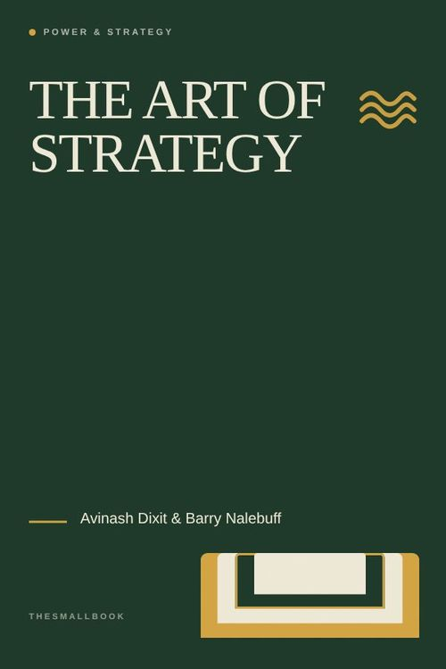

Why Did Trench Warfare Fail?
Where Strategy Died in the Mud - Millions of Men for Meters of Ground
📜 What Happened
Every general in 1914 planned a war of movement - swift, Napoleonic, glorious. Within months, the machine guns and artillery turned it into a war of static trenches, where both sides were perfectly matched in a game neither could win. Yet the generals kept playing the same move: mass frontal assault. The Somme's first day: 57,000 British casualties for a few hundred meters. The lesson should have been 'change the game' - instead they repeated it for four years, because every general was playing a strategy that worked in the last war.
☠️ The Fatal Mistake
Playing the same move against an opponent who has already countered it - strategy as ritual, repeated until the graveyards could no longer hold the dead.
🧠 The Lesson (Free for You)
When your strategy stops working, the answer is not to try it harder. Game theory's deepest lesson: if the game is unwinnable, change the game - new tactics, new fronts, new rules. Sunk costs are not a strategy.
The Antidote Book

Dixit and Nalebuff, two of the world's leading game theorists, translated the science of strategy into practical rules for everyday competition. The core idea: in any interaction, your best move depends on what others…
📖 OPEN THE FULL INTERACTIVE BREAKDOWN →Questions people ask about Trench Warfare
Why did Trench Warfare fail? Playing the same move against an opponent who has already countered it - strategy as ritual, repeated until the graveyards could no longer hold the dead.
How much was lost? ~10 million military deaths; entire nations scarred for a century
What is the lesson? When your strategy stops working, the answer is not to try it harder. Game theory's deepest lesson: if the game is unwinnable, change the game - new tactics, new fronts, new rules. Sunk costs are not a strategy.
Trench Warfare kyun fail hua? In simple English: Playing the same move against an opponent who has already countered it - strategy as ritual, repeated until the graveyards could no longer hold the dead. The cost was ~10 million military deaths; entire nations scarred for a century.
Keep digging
More historical failures · Open the full Graveyard
Read the antidote book summary: The Art of Strategy
Related failures
- Why did The Churning of the Ocean fail? ~5000 BCE (epic) · The Great Co-operation That Produced the Poison First
- Why did The Nanda Empire fail? ~321 BCE · The Richest Empire in India, Lost Because the King Couldn't Keep a Promise
- Why did The Kurukshetra War fail? ~3000 BCE (epic) · The War Everyone Wanted That Destroyed Everyone Who Wanted It
- Why did The Harappan Collapse fail? ~1900 BCE · The Advanced Civilization That Vanished Into Its Own Success
- Why did Easter Island fail? ~1600 · They Cut Down the Last Tree
- Why did Qin Shi Huang fail? 210 BC · The Emperor Who Drank Immortality to Death
Questions this case answers
Questions people ask about Trench Warfare
Why did Trench Warfare fail? Playing the same move against an opponent who has already countered it - strategy as ritual, repeated until the graveyards could no longer hold the dead.
How much was lost? ~10 million military deaths; entire nations scarred for a century
What is the lesson? When your strategy stops working, the answer is not to try it harder. Game theory's deepest lesson: if the game is unwinnable, change the game - new tactics, new fronts, new rules. Sunk costs are not a strategy.
Trench Warfare kyun fail hua? In simple English: Playing the same move against an opponent who has already countered it - strategy as ritual, repeated until the graveyards could no longer hold the dead. The cost was ~10 million military deaths; entire nations scarred for a century.
Keep digging
More historical failures · Open the full Graveyard
Read the antidote book summary: The Art of Strategy
Related failures
- Why did The Churning of the Ocean fail? ~5000 BCE (epic) · The Great Co-operation That Produced the Poison First
- Why did The Nanda Empire fail? ~321 BCE · The Richest Empire in India, Lost Because the King Couldn't Keep a Promise
- Why did The Kurukshetra War fail? ~3000 BCE (epic) · The War Everyone Wanted That Destroyed Everyone Who Wanted It
- Why did The Harappan Collapse fail? ~1900 BCE · The Advanced Civilization That Vanished Into Its Own Success
- Why did Easter Island fail? ~1600 · They Cut Down the Last Tree
- Why did Qin Shi Huang fail? 210 BC · The Emperor Who Drank Immortality to Death
Questions this case answers
Searchable, filterable, simple to read - they paid billions; you get the lesson.